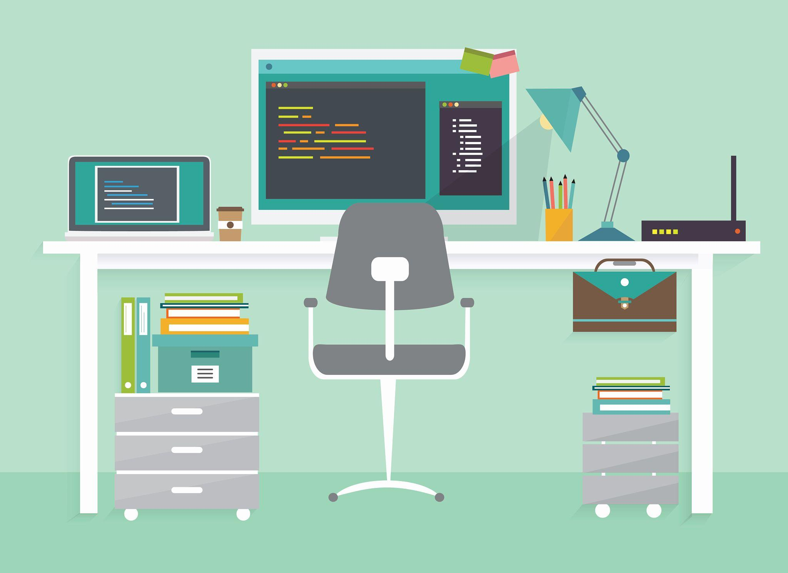
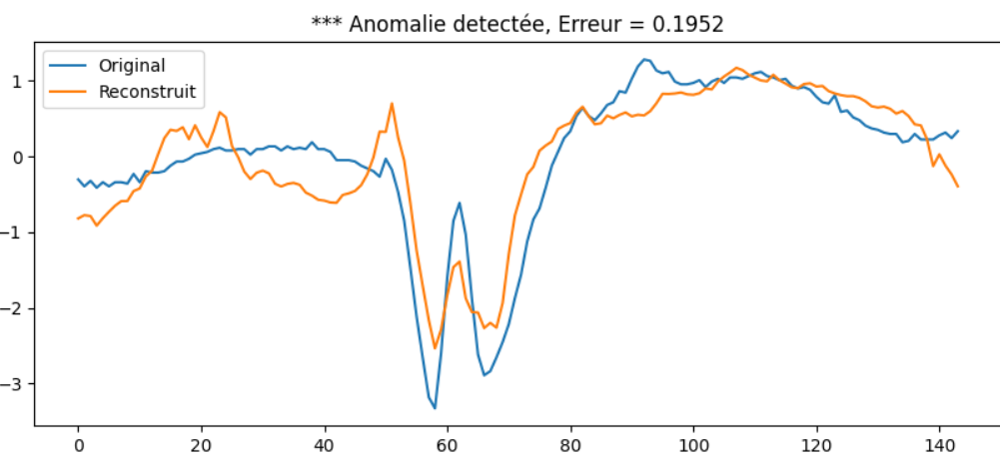
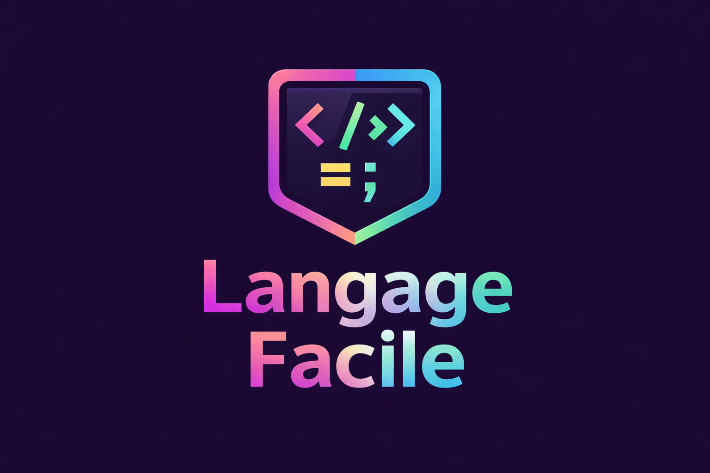
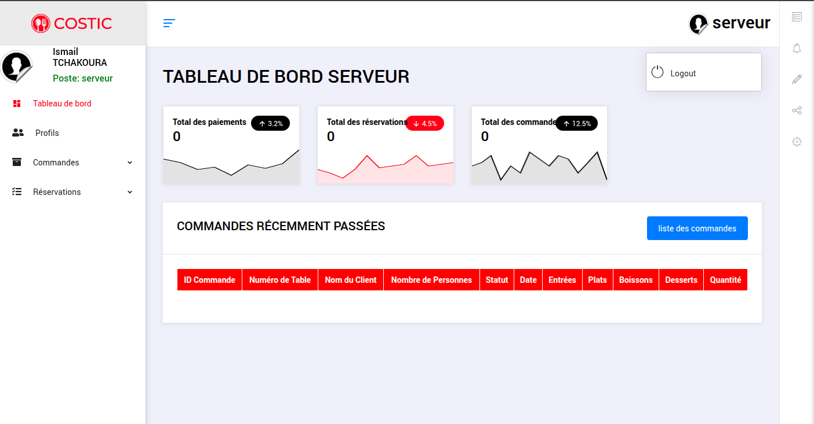
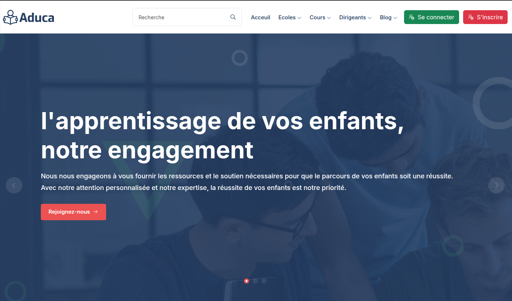
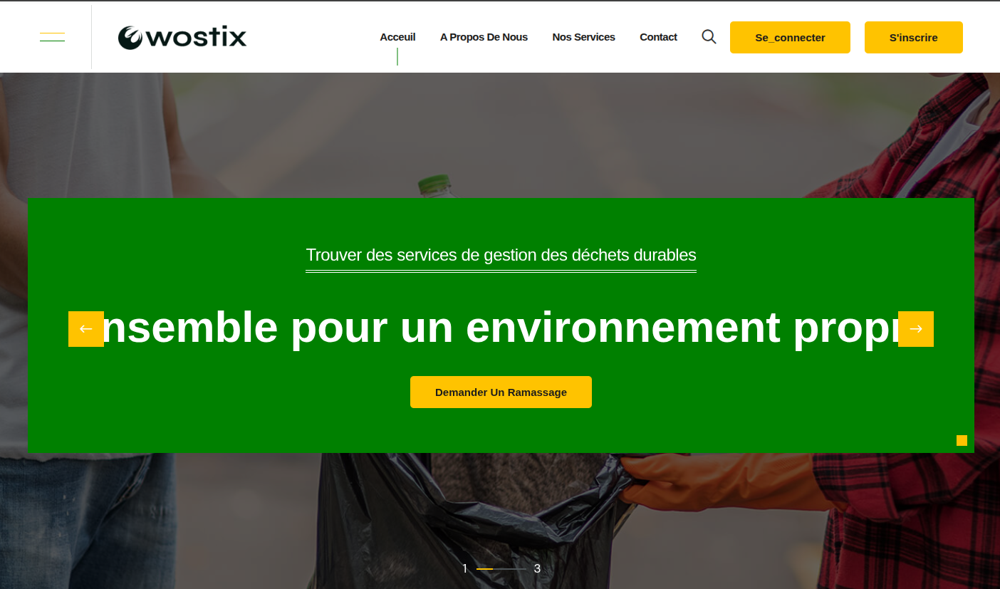
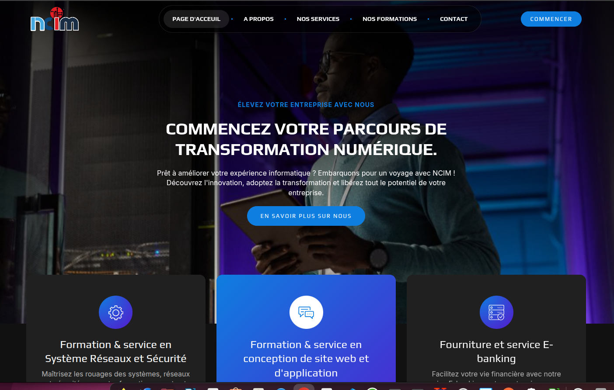

Étudiant en troisième année de Licence Informatique à l’Université de La Rochelle, je développe des compétences solides en développement logiciel, en traitement de données et en intelligence artificielle. À travers mes projets et mes expériences, j’ai acquis une approche rigoureuse de la résolution de problèmes, notamment en machine learning, en conception de systèmes et en développement d’applications. Curieux, autonome et motivé, je m’investis pleinement dans chaque projet afin de proposer des solutions fiables, structurées et adaptées aux besoins réels. Mon objectif est aujourd’hui d’intégrer une alternance pour consolider mes compétences techniques et évoluer dans un environnement professionnel exigean
Étudiant en Licence 3 Informatique à l’Université de La Rochelle, je me spécialise dans le développement logiciel et le traitement des données. Mon parcours m’a permis d’acquérir des bases solides en programmation, en algorithmique et en conception de systèmes.
À travers mes projets, j’ai travaillé sur des problématiques concrètes telles que le machine learning appliqué à des données réelles, la conception d’un compilateur et le développement d’applications avec base de données. Ces expériences m’ont permis de développer une approche rigoureuse, structurée et orientée solution.
Mes stages en entreprise m’ont également permis de découvrir le fonctionnement d’un environnement professionnel, de travailler en équipe et de participer activement au développement de solutions logicielles.
Aujourd’hui, je suis à la recherche d’une alternance afin de continuer à progresser, mettre en pratique mes compétences et m’investir pleinement dans des projets techniques.

Université de La Rochelle - La Rochelle, France
Formation en cours couvrant les fondamentaux de l’informatique, notamment la programmation, les bases de données et l’intelligence artificielle.
ESGIS University - Lomé, Togo
Diplômé avec de solides bases en conception logicielle, administration de bases de données et programmation orientée objet.
Hope Life Institute - Accra, Ghana
Certification IELTS. français, anglais et ewe, permettant une communication fluide à l’international.

J’ai conçu et développé un système complet de détection d’anomalies ECG basé sur l’apprentissage semi-supervisé, orienté vers une analyse fiable en conditions réelles. Le pipeline intègre le prétraitement du signal, la segmentation temporelle et une modélisation par autoencodeur 1D pour capturer les dynamiques cardiaques normales. La détection repose sur l’analyse de l’erreur de reconstruction, avec une évaluation rigoureuse (AUROC, F1-score) et une comparaison à des méthodes de référence. Le modèle a été optimisé pour une exécution embarquée sur Raspberry Pi, sous contraintes strictes de latence et d’efficacité des ressources.

Langage Facile est un compilateur que j’ai conçu pour transformer un langage simplifié en code exécutable via la plateforme .NET. Il implémente l’ensemble de la chaîne de compilation : analyse lexicale, parsing, construction d’AST et génération de code intermédiaire (CIL). Développé avec Flex, Bison et GLib, il prend en charge les structures conditionnelles, les boucles et la gestion dynamique des variables. Ce projet démontre concrètement ma maîtrise des concepts clés des compilateurs et des systèmes bas niveau.

Restaurant Manager est une application web que j’ai développée pour digitaliser et optimiser la gestion des activités d’un restaurant. Elle permet de gérer les commandes, les menus, les clients et le suivi des opérations en temps réel via une interface intuitive et performante. Conçue avec Laravel et PHP, elle intègre une architecture robuste et sécurisée côté backend, combinée à une interface dynamique et responsive. Ce projet met en avant ma capacité à concevoir des solutions complètes orientées utilisateur et adaptées aux besoins métiers.

School Connect est une application web que j’ai développée pour améliorer la communication et le suivi académique entre l’administration, les enseignants, les élèves et leurs parents. Elle permet aux parents de suivre en temps réel l’assiduité de leurs enfants, consulter les bulletins scolaires et interagir directement avec les enseignants. La plateforme centralise également les actualités de l’établissement afin de garantir une meilleure transparence et un suivi continu des élèves. Conçue avec Laravel, PHP et MySQL, elle offre une solution moderne, fiable et orientée utilisateur pour simplifier la gestion scolaire au quotidien.

Clean City Hub est une application web que j’ai développée pour fluidifier la collaboration entre les habitants, les agents de ramassage et la mairie. Elle permet aux résidents de signaler rapidement une absence de collecte, tandis que les ramasseurs suivent l’état d’avancement de leurs tournées zone par zone. Grâce à un système de validation en temps réel, chaque collecte effectuée est enregistrée, ce qui améliore l’organisation des équipes et la visibilité sur les interventions restantes. Cette solution contribue à maintenir un environnement plus sain tout en optimisant la gestion opérationnelle des déchets au quotidien.

Digital Agency Hub est un site web dynamique que j’ai conçu pour valoriser les activités d’une entreprise spécialisée dans la vente d’accessoires informatiques, la formation en programmation, la création visuelle et les solutions digitales pour les entreprises. La plateforme met en avant les services, les offres de formation, les produits disponibles ainsi que l’expertise de l’entreprise dans l’accompagnement à la transformation numérique. Pensé comme une vitrine professionnelle moderne, le site facilite la communication avec les clients, renforce la visibilité de l’entreprise et améliore la présentation de ses différentes prestations. Développé avec Laravel, PHP et MySQL, il s’appuie sur une interface dynamique, responsive et orientée expérience utilisateur.
Ouvert aux opportunités de stage, d'alternance ou de collaboration sur des projets innovants ? N’hésitez pas à me contacter, je serai ravi d’échanger avec vous.